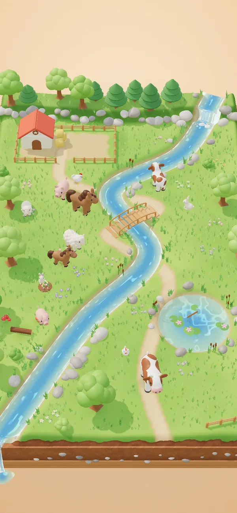
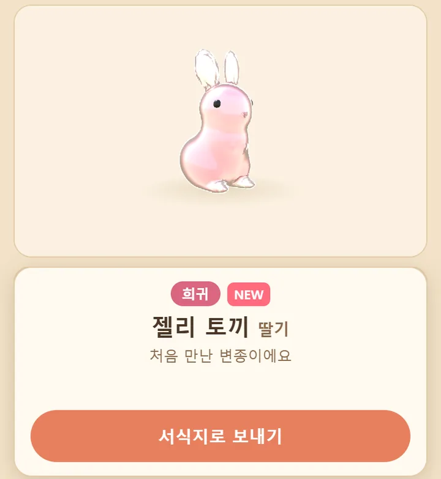
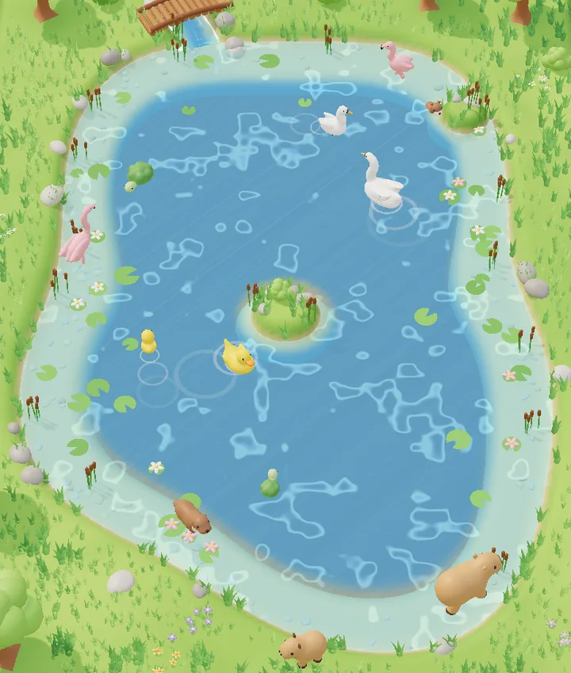
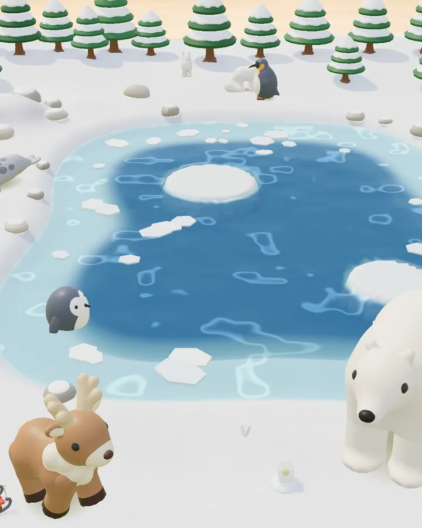
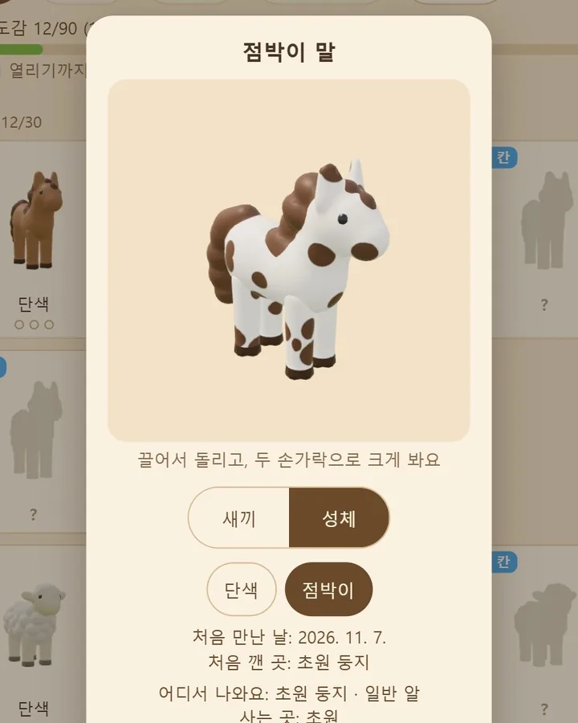
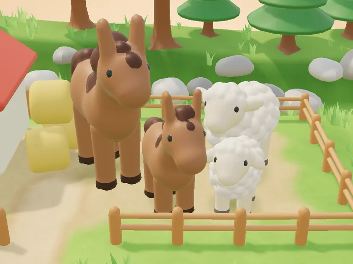
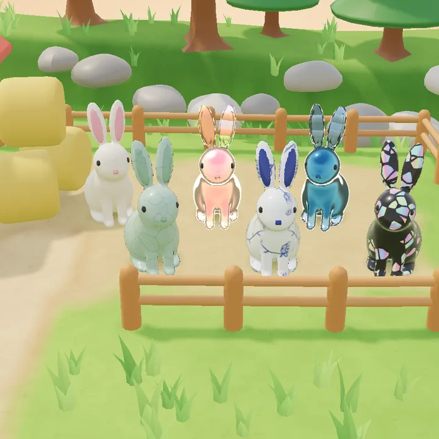
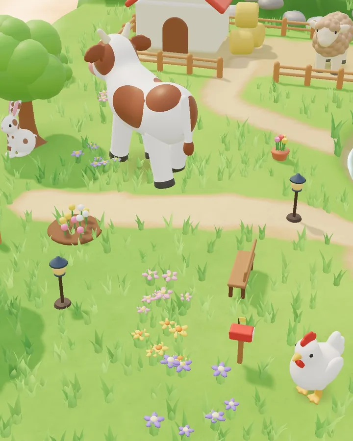
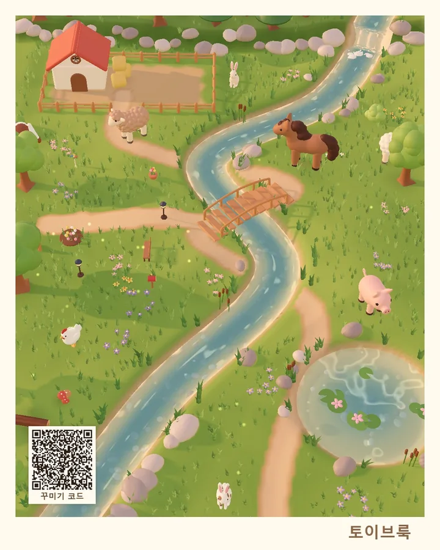

오픈 베타
토이브룩
장난감 피규어 같은 동물을 알에서 깨워, 작은 서식지에서 키우고 모으는 힐링 수집 게임이에요.
개인이 만든 무료 오픈 베타예요. 결제와 광고는 없어요.
설치 없이 휴대폰 브라우저에서 바로 해요. 모은 동물은 그 기기에 저장돼요. 베타 기간의 데이터는 정식 출시 때 초기화돼요.
업데이트 소식 메일은 만 14세 이상만 신청할 수 있어요.

이런 게임이에요
천천히 들여다보고, 하나씩 모으는 게임이에요. 서식지마다 배경 소리와 효과음이 달라요.
-

알에서 깨어나요
둥지에 쌓인 알을 부화 칸에 넣고 기다리면, 누가 깨어났는지 카드로 보여 드려요.
-

초원과 연못
초원에는 말·양·소·돼지·토끼·닭이, 연못에는 오리·백조·거북·수달·플라밍고·카피바라가 살아요. 도감을 조금 채우고 하트를 모으면 다음 서식지가 열려요.
-

설원
연못 다음에 열리는 눈 덮인 서식지예요. 펭귄·북극곰·물범·북극여우·순록·흰올빼미가 살아요.
-

도감에서 3D로
만난 친구는 도감에서 손가락으로 돌려 보고 크게 볼 수 있어요. 새끼 모습과 어른으로 키운 모습, 만나 본 다른 무늬끼리 바꿔 볼 수 있고, 처음 만난 날도 적혀 있어요.
-

새끼에서 어른으로
갓 깨어난 새끼는 머리가 크고 다리가 짧아요. 먹이를 주고 조금 기다리면 어른으로 자라요.
-

재질이 다른 친구들
같은 토끼라도 젤리, 유리, 청자, 청화백자, 자개처럼 재질과 색이 달라요. 도감과 진열장에 하나씩 모아 보세요.
-

서식지 꾸미기
하트로 소품을 사서 놓고, 돌리고, 땅을 칠하고, 땅을 넓혀요. 꾸민 모습은 꾸미기 코드로 주고받을 수 있어요.
-

사진 모드
버튼을 숨기고 가까이, 낮게 찍어요. 아침·노을·밤 같은 시간과 비·안개·무지개 날씨, 필터와 테두리를 골라 사진으로 저장해요.
오픈 베타라서 화면은 조금씩 달라질 수 있어요. 베타에서 모은 동물·꾸미기는 정식 출시 때 처음부터 시작해요.
자주 묻는 질문
모은 동물은 어디에 저장되나요?
게임을 한 기기의 브라우저에 저장돼요. 저장 내용은 서버로 보내지 않아서, 다른 기기나 다른 브라우저에서는 보이지 않아요. 쿠키 없는 묶음 이용 통계만 보내고, 게임 설정에서 끌 수 있어요(개인정보 처리방침 10번).
브라우저의 방문 기록과 사이트 데이터를 지우면 함께 지워지고, 시크릿 창에서는 창을 닫으면 지워져요. 게임의 설정 › 내 저장 백업에서 백업 코드를 만들어 두면, 그 코드로 다른 기기에서도 이어서 할 수 있어요.
아이폰·아이패드는 사파리에서 공유 버튼 › 「홈 화면에 추가」로 열어서 하면 한동안 들어오지 않아도 기록이 안전해요. 기기를 바꿀 때는 백업 코드를 쓰세요.
베타가 끝나면 어떻게 되나요?
베타 기간의 데이터는 정식 출시 때 초기화돼요. 베타에서 모은 동물과 꾸미기는 이어지지 않고, 정식 출시 때 처음부터 다시 시작해요.
휴대폰에서 앱처럼 쓰려면 어떻게 하나요?
게임 화면에서 브라우저 메뉴의 「홈 화면에 추가」를 누르면 아이콘이 생기고, 누르면 주소창 없이 열려요.
- 아이폰 Safari: 아래쪽 공유 단추 › 홈 화면에 추가
- 안드로이드 Chrome: 오른쪽 위 ⋮ › 홈 화면에 추가(또는 앱 설치)
한 번 열어 본 서식지는 인터넷이 없어도 열려요. 아이폰에서는 홈 화면의 토이브룩과 Safari의 저장이 따로라서, Safari에서 모은 동물을 옮기려면 백업 코드를 써 주세요.
의견이나 오류는 어디로 알리나요?
이 의견 보내기 양식이나, 게임의 설정 › 의견 보내기로 알려 주세요. 이름이나 메일 주소는 묻지 않아요.
오류가 났다면 게임의 설정 › 문제 알리기를 눌러 주세요. 게임 버전과 기기 종류, 최근 오류가 복사돼요. 양식 글칸에 붙여 넣고 겪은 일을 적어 보내 주시면 고치는 데 큰 도움이 돼요.
소식 받기
업데이트 소식을 메일로 받아 보시거나, 만드는 이야기를 스레드에서 구경해 주세요.
만 14세 이상만 신청할 수 있어요.
해 보신 느낌은 의견 보내기로 알려 주세요. 이름이나 메일 주소는 묻지 않아요.